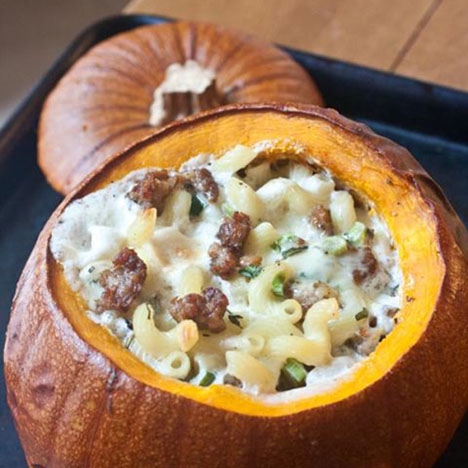
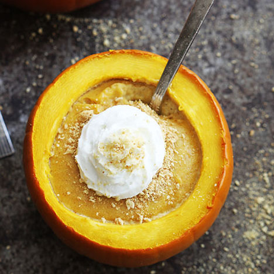
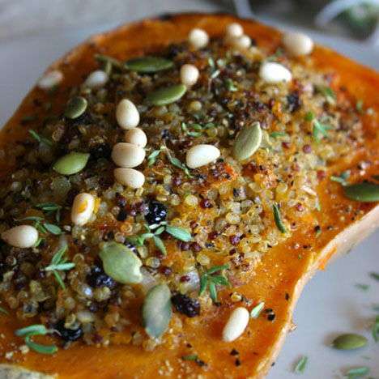
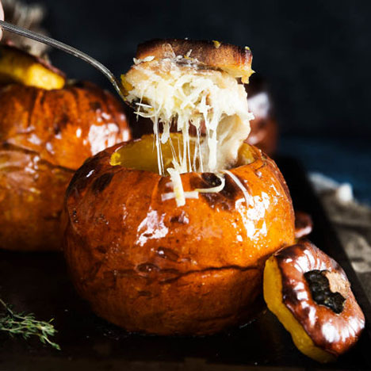
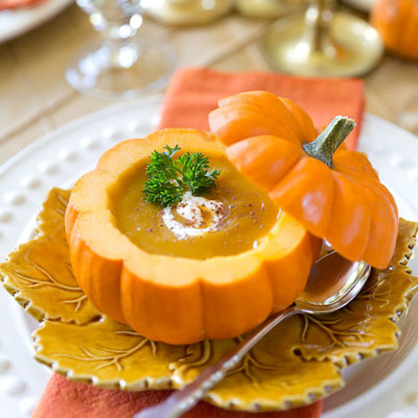
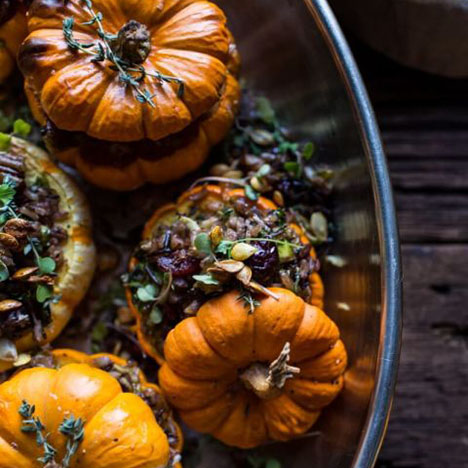

Home
Healthy
Dessert
Seeds
Stuffed
Pie

Mac 'N Cheese Stuffed Pumpkin

Pumpkin Cheesecake Stuffed Pumpkins

Sweet And Spicy Quinoa Stuffed Pumpkin

Cheesy Bread Pudding Stuffed Pumpkin

Pumpkin Bisque

Stuffed Mini Pumpkins